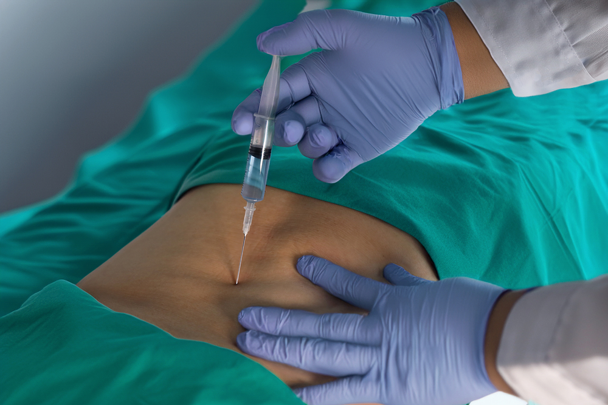

PRP란?
PRP는 Platelet-Rich Plasma의 약자로 혈소판 풍부 혈장을 의미합니다.
혈액을 채취해 혈소판이 풍부한 성분을 분리한 뒤 손상 부위에 주입합니다. 적용 여부는 진찰과 검사 결과를 함께 살펴 결정합니다.
PRP는 자신의 혈액에서 혈소판이 풍부한 혈장을 분리한 뒤
통증과 손상이 발생한 관절이나 힘줄에 주입하는 치료입니다.

PRP는 Platelet-Rich Plasma의 약자로 혈소판 풍부 혈장을 의미합니다.
혈액을 채취해 혈소판이 풍부한 성분을 분리한 뒤 손상 부위에 주입합니다. 적용 여부는 진찰과 검사 결과를 함께 살펴 결정합니다.

통증 부위와 조직의 손상 정도를 함께 확인합니다.
상태에 맞는 치료를 계획하고 주입 부위를 신중하게 결정합니다.
본인의 혈액을 이용하기 때문에 외부 물질에 대한 과민반응의 부담을 줄일 수 있습니다.
채취한 혈액을 원심분리하여 혈소판이 풍부한 혈장 성분을 분리합니다.
진찰과 영상검사를 바탕으로 치료 부위를 정하고 필요한 경우 초음파로 위치를 확인하며 주입합니다.
통증의 원인과 손상 정도, 이전 치료에 대한 반응을 확인합니다.
검사 결과와 기대할 수 있는 효과를 함께 살펴 치료 여부를 결정합니다.
주입 후 며칠간 뻐근함·통증이 있을 수 있어 안내 기간 동안 무리한 활동은 피하세요.
진통제·소염제는 의료진과 상의하고, 붓기·통증 악화 시 진료받으세요.